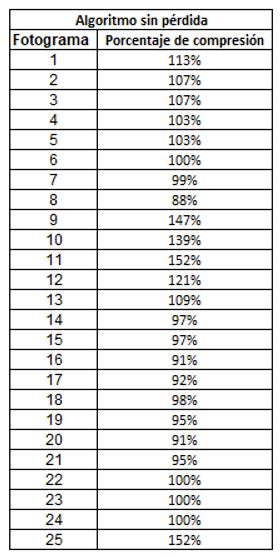
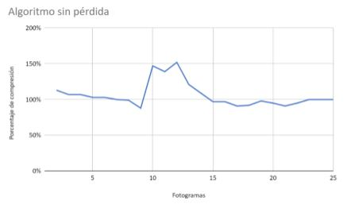

Introduccion
Hoy en día, los tamaños de muchos videos, audios o aplicaciones pueden ser extremadamente grandes, por lo que la reducción del tamaño del archivo puede jugar un rol muy importante en la administración de recursos informáticos o en el tiempo de transmisión. El principal propósito de este artículo de investigación es implementar y analizar algoritmos de compresión de datos. La compresión de datos se puede definir como la reducción del volumen de datos de un archivo, es decir, utilizar una menor de cantidad de bits para representar un mismo archivo. Ahora bien, existen muchas técnicas y algoritmos para comprimir datos. Sin embargo, se tratarán únicamente los más comunes que permitan comprimir archivos de audio o video y garantizar la menor pérdida de datos posibles. Por otra parte, la compresión de datos se basa generalmente en buscar repeticiones, patrones o secuencias en series de datos para, posteriormente, almacenar el dato junto con el número de veces que se repite, esta nueva secuencia de símbolos puede ser almacenada o enviada a través de una red.
Contexto
En la actualidad, la tecnología ha avanzado en materia de procesamiento superando la capacidad de almacenamiento e inclusive, más rápido que los anchos de banda de la red, debido a que dichos anchos de banda necesitan de grandes cambios respecto a sus infraestructuras de telecomunicaciones. A causa de esto, es necesario un procedimiento para reducir el tamaño de los datos mediante el aprovechamiento máximo de la potencia de procesamiento de los procesadores.
La arquitectura Cliente-Servidor existía antes de la aparición de las redes de área local. El primer aproximamiento a esta arquitectura fue en 1960, en el que se tenía Mainframes manejados por el Command Prompt. En 1970, nacieron las aplicaciones interactivas en las que el usuario realizaba una acción con una interfaz y esta tenía una respuesta. En 1980, con el comienzo de las redes locales y con esta, el inicio de las eras de la computadora central, computadoras dedicadas, conexión libre y por último, a través de redes. Para el año 2000, se implementó la combinación de mainframes con redes con el propósito de la creación de los Web Services.
El procesamiento para la compresión de datos se divide en dos ramas; compresión de datos con pérdida y compresión de datos sin pérdida. La primera mencionada busca una representación fiel del archivo original basándose en la menor información posible para representar a esta. No obstante, es imposible la reconstrucción exacta después de la ejecución del algoritmo. Esta es mayormente usada en contenido multimedia en la que el recorte de frames o el acotamiento de frecuencias imperceptibles para el oído humano, son vitales para el ahorro de recursos respecto a, por ejemplo, una transmisión de datos vía online. La segunda hace referencia a la conservación de la información, tanto antes como después de la ejecución del algoritmo. Esto conlleva a mayores tiempos de procesamiento. Generalmente es utilizado en archivos de texto.
Problema
Se desea implementar un proyecto de desarrollo de software, que consiste en un juego de fútbol con perspectiva 2D, con énfasis en la arquitectura ClienteServidor y la aplicación de los algoritmos de compresión de datos para su posterior análisis, de acuerdo al enunciado proporcionado por el curso de Redes 2019-II [1] en el que se evaluará las habilidades y conocimientos adquiridos en la asignatura, como también, de cursos anteriores requeridos para la implementación de código. El equipo conformado por los cuatro integrantes acordó desarrollar el proyecto mediante el lenguaje C# bajo el software Microsoft Visual Studio, IDE compilador de carácter gratuito. Para la interfaz y motor gráfico será usada la herramienta Unity en su referencia 2018.4.9f1 de versión gratuita. Respecto al manejo de versiones, se usará un repositorio público de la plataforma Github[2] por medio de un solo branch.
Objetivos/Metas
Objetivos Generales
- Analizar la variación tanto del tamaño del video como en la calidad de forma subjetiva y objetivamente con cada algoritmo de compresión y con diferentes archivos multimedia.
Objetivos Especificos
- Utilizar un protocolo orientado a la conexión TCP para garantizar la transmisión de los movimientos del cliente con el menor retardo posible.
- Utilizar el protocolo UDP como herramienta eficaz para la transmisión de contenidos multimedia.
- Desarrollar un servidor en C# que gestione y organice partidas de fútbol mediante la conexión de pares de clientes.
- Implementar la modificación de dos algoritmos de compresión de contenido multimedia, bien sea audio o video, con el propósito de analizar variaciones en los mismos, en una partida del juego.
- Comparar la calidad del video antes y después de realizar la compresión del archivo en ambas implementaciones.
- Medir los tiempos de compresión, de envío y recepción en ambas implementaciones.
- Determinar qué tanto afecta el tamaño del archivo a ambos algoritmos.
Investigación
" Encuentra la metodoligia utilizada para está investigación "
" Encuentra los resultados y el analisis de datos "
" Encuentra recomendaciones para futuros trabajos "
Metodologia
La metodología que se lleva a cabo en este proyecto es de tipo experimental, debido a que se probará la eficiencia y eficacia de los métodos de compresión en varios escenarios para así lograr tener una idea general del comportamiento de cada uno en los diferentes casos, a continuación se detalla el proceso que se debe realizar:
En primer lugar, se debe realizar el desarrollo de la aplicación junto con el servidor TCP que orqueste los partidos, para así poder añadir las funcionalidades del juego, además de permitir la conexión de varios clientes. Estos poseen la opción de salirse de la partida en cualquier momento, como también, de obtener un informe con los datos más relevantes del encuentro una vez terminada la partida
En segundo lugar, se desarrolla el servidor UDP que envíe la información del arreglo de bytes con cualquier método de compresión tradicional para posteriormente ser visualizado en frames (cuadros) por segundo determinando la velocidad mediante hilos. En este caso, se usó un algoritmo para comprimir un mapa de bits teniendo como parámetros el bitmap y la calidad que se quiere del archivo.
Ahora bien, se tienen los elementos principales que permiten jugar y realizar el envío de información, se puede continuar con la implementación sobre el servidor UDP de la siguiente manera:
Se debe elegir los algoritmos a implementar realizando las modificaciones necesarias para el envío de contenido multimedia.
La recopilación de la información se hará de forma experimental, es decir, implica la observación, el registro y la manipulación de las variables del objeto de estudio, de manera que se tomarán aproximadamente dos o tres muestras de tiempo y de los parámetros de calidad con cada algoritmo, ambos con un archivo del mismo tamaño, a esas mediciones se les calcula un promedio y se procede a modificar el tamaño del archivo para realizar nuevamente el experimento pero con otro tamaño del archivo.
Se tomará como ejemplo el estudio realizado por Sotelo y Joskowicz[11] en su artículo “Modelo de Estimación de Calidad de Video” para el desarrollo de las métricas respecto a la transmisión contenido audio visual. En este es necesario disponer de la imagen o cuadros originales, esto con el propósito de dar representación lo más fiel posible. El error cuadrático medio (MSE) descrito en la primera fórmula(1) junto a la raíz cuadrada (RMSE) en sus siglas en inglés Root Mean Square Error situada en la segunda fórmula(2), las cuales permiten encontrar una relación señal a ruido de pico (PSNR) ó Signal to Noise Ratio establecidas en la siguiente ecuación(3):
Figura 1. Fórmulas de la estimación de la calidad de video.
Según Sotelo y Joskowicz (2012), “En las ecuaciones (1) a (3) la imagen tiene N x M píxeles y T cuadros, x, y son los píxeles de la imagen original y la distorsionada respectivamente. L es el rango dinámico que pueden tomar los valores de x o y, y toma el valor 255 para 8 bits por píxel.”
Debido a la pérdida de información deberán encontrarse cambios notorios del archivo original al al introducido en el proceso de codificación por el algoritmo de compresión utilizado. Cabe resaltar que no solo se puede perder la calidad debido a la compresión, sino también, a factores como retrasos, pérdida de paquetes, etc, que son finalmente reflejados en la partida del cliente como frames cortados o pérdida de píxeles.
Figura 2. Comparación de compresión de la letra a.
En otro orden de ideas, no se descarta la posibilidad de utilizar metodología subjetiva en la que por medio de la opinión se valide mediante la inclusión de una rúbrica en la que se clasifique que tan óptimo puede ser el audio escuchado o la visualización de un video. Este es un recurso menos costoso en cuanto a implementación se refiere. “La opinión media, obtenida en forma directa mediante el “MOS” (Mean Opinion Score), (...) los evaluadores son individuos que juzgan la calidad en base a su propia percepción y experiencia previa.” (Sotelo, Joskowicz. 2012). Por tanto, no es necesario un conocimiento en el área de Redes y Computación como criterio de validación de la experiencia del cliente con la aplicación. Como se observa en la figura 1, a la derecha procesada y la izquierda sin procesar, es posible que, en base a la experiencia de cada usuario, haya opiniones distintas acerca de cuál podría ser una mejor imagen.
Tabla 1. Rúbrica de compresión de video mediante metodología subjetiva.
Se estableció una tabla en la que mediante un rango del 1 al 10 el cliente pueda establecer su experiencia dependiendo de qué tan agresivo pueda ser el algoritmo o factores anteriormente mencionados, siendo 1-0 las puntuaciones más bajas y 9-10 las altas siendo estas las más fieles al contenido original.
Resultados y Analisis
Se utilizaron dos algoritmos de compresión para la futura evaluación y análisis de resultados con el propósito de comparar la eficiencia, ventajas y desventajas que cuenta cada uno de estos, así como también, el porcentaje de compresión de cada fotograma y la calidad con la que se reconstruye el video después de ser comprimido.
El primero se define como un algoritmo de compresión con pérdida o “Lossy Algorithm”; en el que, colocandolo en práctica, su codificación tuvo como objetivo representar cierta cantidad de información utilizando una menor cantidad de la misma, siendo imposible una reconstrucción exacta de los datos originales, por ende, no existe la necesidad de implementar un algoritmo de descompresión debido a que, en lugar de guardar una copia exacta, solo se guarda una aproximación. Esta aproximación se aprovecha de las limitaciones de la percepción humana para acotar frames o cuadros en los que el cambio entre uno y otro es prácticamente imperceptible.
El segundo utilizado fue un algoritmo sin pérdida también denominado “Lossless Algorithm”; en el que, colocandolo en práctica, su codificación tuvo como objetivo representar cierta cantidad de información utilizando u ocupando un espacio menor, siendo posible una reconstrucción exacta de los datos originales, esto evoca la necesidad de implementar un algoritmo de descompresión que permita la visualización sino idéntica prácticamente igual a la inicial. Es decir, la compresión sin pérdidas engloba a aquellas técnicas que garanticen generar un duplicado exacto del flujo de datos de entrada después de un ciclo de compresión / expansión. Por esta razón es utilizada para comprimir archivos que contienen datos que no pueden ser degradados o perdidos, como pueden ser documentos de texto, imágenes y sonido.
Con el objetivo de profundizar en los resultados obtenidos, no solo se tuvo en cuenta como prueba el material audiovisual publicitario como requerimiento propuesto en el enunciado brindado para el proyecto sino también, se puso a prueba diferentes escenarios en los que se viera el potencial a fondo de estos algoritmos a evaluar.
Para el primer escenario se obtuvieron los siguientes resultados de acuerdo al material audiovisual publicitario tanto para el algoritmo con pérdida de información como el algoritmo sin pérdida de información:

Tabla 2. Algoritmo de compresión sin pérdida (Video publicitario).
En base a la tabla 2 y gráfico 1 obtenidos respecto al algoritmo de compresión con pérdida de información se representaron los porcentajes de acuerdo a la proporción en que comprime cada fotograma de acuerdo al Array de Bytes. Este se obtiene mediante el número de bytes del fotograma ya comprimido dividido el número de bytes del fotograma normal, es decir, a un menor valor de compresión se considera una compresión más óptima. Se tomaron los primeros 25 fotogramas como muestra representativa obteniendo como valor máximo un porcentaje de compresión de 152% y un mínimo de 88% para finalmente obtener una media de 122%, lo que permite inferir que posee una tasa de compresión muy baja a comparación del algoritmo con pérdida.

Gráfico 1. Algoritmo de compresión sin pérdida (Video publicitario).
Esto se debe a que al comprimir el arreglo de bytes se obtuvo un peso superior al original, posiblemente a la implementación como también a que este tipo de algoritmos tienen un mayor rendimiento respecto a la compresión de textos ya que se posee un patrón de seguimiento que permite determinar por medio de probabilidades el siguiente dato. Sin embargo, en un material audiovisual se convierte en una situación prácticamente impredecible si se trata de un video con una representación de colores muy amplia.
En base a la tabla 2 y gráfico 1 obtenidos respecto al algoritmo de compresión con pérdida de información se representaron los porcentajes de acuerdo a la proporción en que comprime cada fotograma de acuerdo al Array de Bytes. Este se obtiene mediante el número de bytes del fotograma ya comprimido dividido el número de bytes del fotograma normal, es decir, a un menor valor de compresión se considera una compresión más óptima. Se tomaron los primeros 25 fotogramas como muestra representativa obteniendo como valor máximo un porcentaje de compresión de 152% y un mínimo de 88% para finalmente obtener una media de 122%, lo que permite inferir que posee una tasa de compresión muy baja a comparación del algoritmo con pérdida.
Gráfico 1. Algoritmo de compresión sin pérdida (Video publicitario).
Esto se debe a que al comprimir el arreglo de bytes se obtuvo un peso superior al original, posiblemente a la implementación como también a que este tipo de algoritmos tienen un mayor rendimiento respecto a la compresión de textos ya que se posee un patrón de seguimiento que permite determinar por medio de probabilidades el siguiente dato. Sin embargo, en un material audiovisual se convierte en una situación prácticamente impredecible si se trata de un video con una representación de colores muy amplia.
Tabla 2. Algoritmo de compresión sin pérdida (Video publicitario).